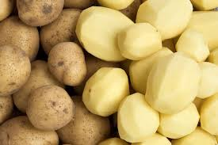
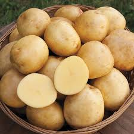
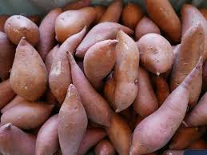
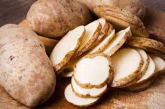
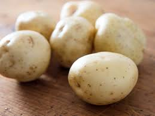
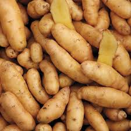
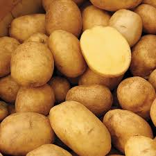
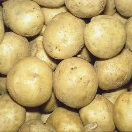
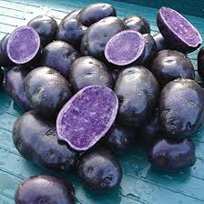
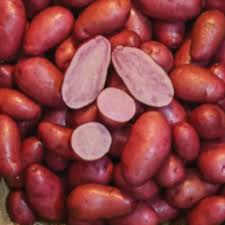

Choose a Potato in the dropdown list to see information about it!

Price: $0.83/lb
Description: The most common Baking Potatos are the Russet Potatoes, due to their high starch content and thick skin, which creates a crisp yet fluffy texture when baking.

Price: $0.79/lb
Description: The Yukon Gold Potato is a medium to large potato with a roughly round shape, being slightly longer than it is wide. It has a thin, smooth skin, ranging from a yellow color to a light brown. They have a sweet, buttery flavor best served roasted, grilled, fried, mashed, or boiled. They are also a great source of vitamin C.

Price: $0.97/lb
Description: The Sweet Potato is a medium sized potato with a reddish-brown skin and a vibrantly orange inside, although those colors can change based on the variety of sweet potato. Sweet potatoes are rich in Vitamins such as Vitamin A and Vitamin C. They are also a good source of potassium and fiber! Sweet potatoes are best served mashed, roasted, or cooked.

Price: $0.83/lb
Description: The Russet Potato is a medium to large potato with light brown skin. It has a light and fluffy texture that turns chewy when cooked. It's best served baked, roasted, mashed, and fried.

Price: $0.85/lb
Description: The White Potato is a medium sized potato with a light colored skin and inside, with a midly sweet flavor. They hold their shape well when cooked, making them a good pick for boiling, mashing, and roasting. This is another potato that is a high source of potassium and Vitamin C, while also being low in fat.

Price: $1.50/lb
Description: The Russian Banana Potato is a small oblong shaped potato with a light brown skin and yellow inside. The skin of this potato is often reported as exceptionally smooth, so thin that peeling the potato is often unnecesssary. This potato is also a great source of potassium and vitamin C!

Price: $2.99/lb
Description: The German Butterball Potato is a medium to large potato that is slightly round in shape. It has smooth, yellow skin with frequent dark brown spots/patches. The inside of the potato is a vibrant yellow color and when cooked offers a creamy and smooth consistency with a buttery flavor. These potatoes are an amazing source of potassium, vitamin C, iron, and fiber.

Price: $1.33/lb
Description: The Kennebec Potato is a medium to large potato with an oval shape. They have a thin, brown skin, which also has a smooth appearance yet rough texture. These potatos have a high starch and sugar content, and must be cooked as they are inedible otherwise. Once cooked they develop a rich earthy yet slightly sweet taste.

Price: $3.50/lb
Description: The Purple Majesty Potato is a medium potato with a dark purple skin, with an intensely purple inside as well. It retains its color even when cooked. These potatoes are known for their slightly nutty, buttery flavor with a waxy texture. These purple potatoes also allow you to cook purple fries.

Price: $3.00/lb
Description: The Red Thumb Potato is a small potato slightly wide in shape, with a semi-smooth red skin and some dark brown spots across its surface. The inside of this potato is a mix of pink and white. They have a uniform shape and have a earthy yet buttery flavor.